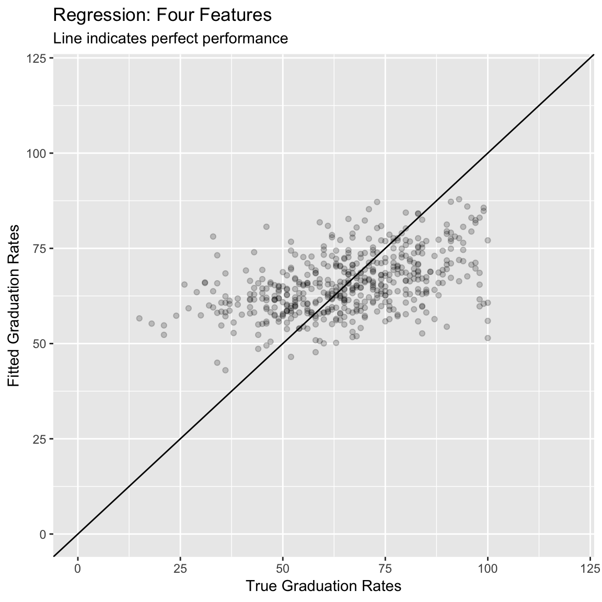
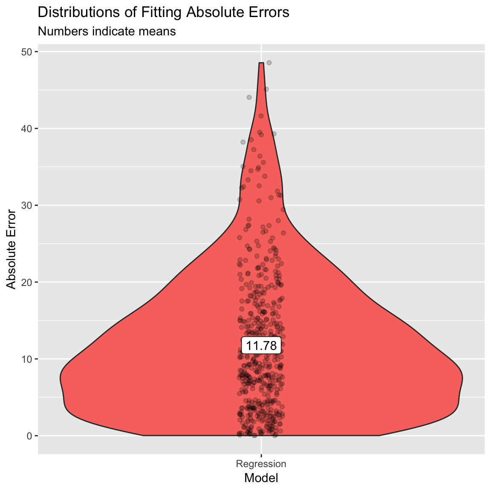
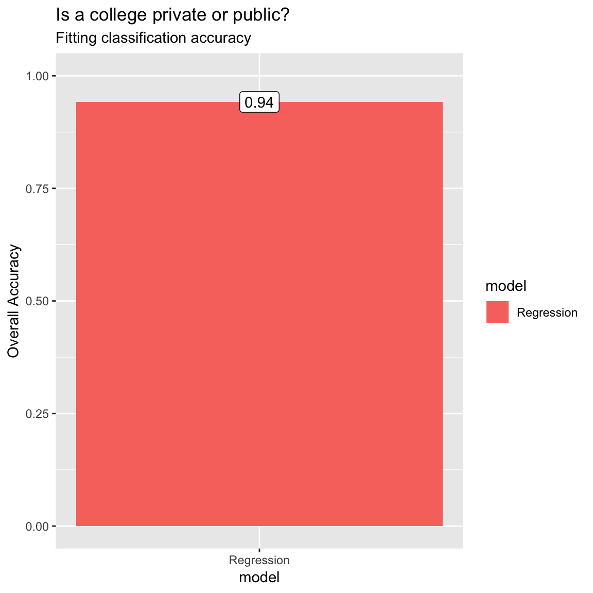

Fitting
Applied Machine Learning with R
Basel R Bootcamp

Basel R Bootcamp

adapted from xkcd.com
Overview
In this practical you’ll practice the basics of fitting and exploring regression models in R.
By the end of this practical you will know how to:
- Fit regression to training data.
- Explore your object with generic functions.
- Evaluate its fitting performance using accuracy measures such as MSE and MAE.
- Explore the effects of adding additional features.
Datasets
| File | Rows | Columns |
|---|---|---|
| college_train.csv | 1000 | 21 |
- The
college_traindata are taken from theCollegedataset in theISLRpackage. To see column descriptions, run the following:
library(ISLR) # Load ISLR package
?College # Look at help menu for CollegeGlossary
| Function | Package | Description |
|---|---|---|
trainControl() |
caret |
Define modelling control parameters |
train() |
caret |
Train a model |
predict(object, newdata) |
base |
Predict the criterion values of newdata based on object |
postResample() |
caret |
Calculate aggregate model performance in regression tasks |
confusionMatrix() |
caret |
Calculate aggregate model performance in classification tasks |
Packages
| Package | Installation |
|---|---|
tidyverse |
install.packages("tidyverse") |
caret |
install.packages("caret") |
Examples
# Fitting and evaluating a regression model ------------------------------------
# Step 0: Load packages-----------
library(tidyverse) # Load tidyverse for dplyr and tidyr
library(caret) # For ML mastery
# Step 1: Load and Clean, and Explore Training data ----------------------
# I'll use the mpg dataset from the dplyr package in this example
# no need to load an external dataset
data_train <- read_csv("1_Data/mpg_train.csv")
# Convert all characters to factor
# Some ML models require factors
data_train <- data_train %>%
mutate_if(is.character, factor)
# Explore training data
data_train # Print the dataset
View(data_train) # Open in a new spreadsheet-like window
dim(data_train) # Print dimensions
names(data_train) # Print the names
# Step 2: Define training control parameters -------------
# In this case, I will set method = "none" to fit to
# the entire dataset without any fancy methods
# such as cross-validation
train_control <- trainControl(method = "none")
# Step 3: Train model: -----------------------------
# Criterion: hwy
# Features: year, cyl, displ, trans
# Regression
hwy_glm <- train(form = hwy ~ year + cyl + displ + trans,
data = data_train,
method = "glm",
trControl = train_control)
# Look at summary information
summary(hwy_glm)
# Step 4: Access fit ------------------------------
# Save fitted values
glm_fit <- predict(hwy_glm)
# Define data_train$hwy as the true criterion
criterion <- data_train$hwy
# Regression Fitting Accuracy
postResample(pred = glm_fit,
obs = criterion)
# RMSE Rsquared MAE
# 3.246182 0.678465 2.501346
# On average, the model fits are 2.8 away from the true
# criterion values
# Step 5: Visualise Accuracy -------------------------
# Tidy competition results
accuracy <- tibble(criterion = criterion,
Regression = glm_fit) %>%
gather(model, prediction, -criterion) %>%
# Add error measures
mutate(se = prediction - criterion,
ae = abs(prediction - criterion))
# Calculate summaries
accuracy_agg <- accuracy %>%
group_by(model) %>%
summarise(mae = mean(ae)) # Calculate MAE (mean absolute error)
# Plot A) Scatterplot of criterion versus predictions
ggplot(data = accuracy,
aes(x = criterion, y = prediction, col = model)) +
geom_point(alpha = .2) +
geom_abline(slope = 1, intercept = 0) +
labs(title = "Predicting mpg$hwy",
subtitle = "Black line indicates perfect performance")
# Plot B) Violin plot of absolute errors
ggplot(data = accuracy,
aes(x = model, y = ae, fill = model)) +
geom_violin() +
geom_jitter(width = .05, alpha = .2) +
labs(title = "Distributions of Fitting Absolute Errors",
subtitle = "Numbers indicate means",
x = "Model",
y = "Absolute Error") +
guides(fill = FALSE) +
annotate(geom = "label",
x = accuracy_agg$model,
y = accuracy_agg$mae,
label = round(accuracy_agg$mae, 2))Tasks
A - Setup
Open your
BaselRBootcampR project. It should already have the folders1_Dataand2_Code. Make sure that the data file(s) listed in theDatasetssection above are in your1_Datafolder- Open a new R script. At the top of the script, using comments, write your name and the date. Save it as a new file called
Fitting_practical.Rin the2_Codefolder.
Using
library()load the set of packages for this practical listed in the packages section above.
## NAME
## DATE
## Fitting Practical
library(tidyverse)
library(caret)- For this practical, we’ll use a dataset of 388 U.S. Colleges.The data is stored in
college_train.csv. Using the following template, load the dataset into R ascollege_train:
# Load in college_train.csv data as college_train
college_train <- read_csv(file = "1_Data/college_train.csv")- Take a look at the first few rows of the dataset by printing it to the console.
college_train# A tibble: 500 x 18
Private Apps Accept Enroll Top10perc Top25perc F.Undergrad P.Undergrad
<chr> <int> <int> <int> <int> <int> <int> <int>
1 Yes 1202 1054 326 18 44 1410 299
2 Yes 1415 714 338 18 52 1345 44
3 Yes 4778 2767 678 50 89 2587 120
4 Yes 1220 974 481 28 67 1964 623
5 Yes 1981 1541 514 18 36 1927 1084
6 Yes 1217 1088 496 36 69 1773 884
7 No 8579 5561 3681 25 50 17880 1673
8 No 833 669 279 3 13 1224 345
9 No 10706 7219 2397 12 37 14826 1979
10 Yes 938 864 511 29 62 1715 103
# ... with 490 more rows, and 10 more variables: Outstate <int>,
# Room.Board <int>, Books <int>, Personal <int>, PhD <int>,
# Terminal <int>, S.F.Ratio <dbl>, perc.alumni <int>, Expend <int>,
# Grad.Rate <int>- Print the numbers of rows and columns using the
dim()function
# Print number of rows and columns of college_train
dim(XXX)# Print number of rows and columns of college_train
dim(college_train)[1] 500 18- Look at the names of the dataframe with the
names()function
names(XXX)names(college_train) [1] "Private" "Apps" "Accept" "Enroll" "Top10perc"
[6] "Top25perc" "F.Undergrad" "P.Undergrad" "Outstate" "Room.Board"
[11] "Books" "Personal" "PhD" "Terminal" "S.F.Ratio"
[16] "perc.alumni" "Expend" "Grad.Rate" - Open the dataset in a new window using
View(). How does it look?
View(XXX)- We need to do a little bit of data cleaning before starting. Specifically, we need to convert all character columns to factors: Do this by running the following code:
# Convert character to factor
college_train <- college_train %>%
mutate_if(is.character, factor)B - Determine sampling procedure
In caret, we always need to define computational nuances of training using the trainControl() function. Because we’re learning the basics of fitting, we’ll set method = "none" (Note that you would almost never do this for a real prediction task, you’ll see why later!)
# Set training resampling method to "none" to keep everything super simple
# for demonstration purposes. Note that you would almost never
# do this for a real prediction task!
ctrl_none <- trainControl(method = "none") Regression
C - Fit a regression model
- Using the code below, fit a regression model predicting graduation rate (
Grad.Rate) as a function of one featurePhD, the percent of faculty with PhDs). Save the result as an objectGrad.Rate_glm
- Set the
formargument toGrad.Rate ~ PhD - Set the
dataargument to your training datacollege_train - Set the
methodargument to"glm"for regression - Set the
trControlargument toctrl_none, the object you created previously
# Grad.Rate_glm: Regression Model
# Criterion: Grad.Rate
# Features: PhD
Grad.Rate_glm <- train(form = XX ~ XX,
data = XX,
method = "XX",
trControl = XX)# Grad.Rate_glm: Regression Model
# Criterion: Grad.Rate
# Features: PhD
Grad.Rate_glm <- train(form = Grad.Rate ~ PhD,
data = college_train,
method = "glm",
trControl = ctrl_none)- Explore the model using the
summary()function.
- Set the main argument to
Grad.Rate_glm
# Show summary information from the regression model
summary(XXX)# Show summary information from the regression model
summary(Grad.Rate_glm)
Call:
NULL
Deviance Residuals:
Min 1Q Median 3Q Max
-43.83 -10.44 0.49 10.93 41.47
Coefficients:
Estimate Std. Error t value Pr(>|t|)
(Intercept) 41.372 3.382 12.23 < 2e-16 ***
PhD 0.330 0.045 7.33 9.1e-13 ***
---
Signif. codes: 0 '***' 0.001 '**' 0.01 '*' 0.05 '.' 0.1 ' ' 1
(Dispersion parameter for gaussian family taken to be 257)
Null deviance: 141641 on 499 degrees of freedom
Residual deviance: 127832 on 498 degrees of freedom
AIC: 4197
Number of Fisher Scoring iterations: 2- Look at the results, how do you interpret the regression coefficients? What is the general relationship between PhD and graduation rates? Does this make sense?
# For every increase of one in PhD (the percent of faculty with a PhD), the expected graduation rate increases by 0.33- Now it’s time to save the model fits! Do this by running the following code to save the fitted values as
glm_fit
- Set the main argument to
Grad.Rate_glm
# Get fitted values from the Grad.Rate_glm model and save as glm_fit
glm_fit <- predict(XXX)# Get fitted values from the model and save as glm_fit
glm_fit <- predict(Grad.Rate_glm)- Print your
glm_fitobject - what are these values? Do they look reasonable? That is, are they in the range of what you expect the criterion to be?
# Print glm_fit
glm_fit 1 2 3 4 5 6 7 8 9 10 11 12 13 14 15
67.1 58.5 66.8 61.5 65.5 52.9 70.4 67.8 65.5 64.5 55.9 69.1 56.9 61.5 70.7
16 17 18 19 20 21 22 23 24 25 26 27 28 29 30
65.8 63.8 59.9 63.5 50.9 71.7 60.5 74.0 67.4 64.8 66.8 59.9 69.8 65.1 66.5
31 32 33 34 35 36 37 38 39 40 41 42 43 44 45
63.8 70.1 68.4 71.1 68.8 67.1 63.2 65.5 58.9 60.5 70.7 68.4 67.8 67.8 57.2
46 47 48 49 50 51 52 53 54 55 56 57 58 59 60
72.1 69.4 60.8 64.8 70.1 67.4 73.4 66.8 73.1 70.4 56.6 61.5 57.9 71.4 71.4
61 62 63 64 65 66 67 68 69 70 71 72 73 74 75
61.8 64.1 72.4 66.5 62.8 67.8 68.8 68.1 68.4 62.5 60.2 58.9 61.8 67.1 52.3
76 77 78 79 80 81 82 83 84 85 86 87 88 89 90
62.2 61.2 65.5 75.4 66.1 56.9 64.1 65.8 66.1 72.1 60.2 56.6 70.4 66.1 61.8
91 92 93 94 95 96 97 98 99 100 101 102 103 104 105
70.1 61.5 61.2 66.5 70.4 53.3 58.5 44.7 64.1 67.8 71.4 66.5 69.4 58.5 55.2
106 107 108 109 110 111 112 113 114 115 116 117 118 119 120
63.2 70.4 68.1 70.7 60.2 70.7 67.8 57.2 72.7 70.4 67.4 72.1 58.9 63.8 65.8
121 122 123 124 125 126 127 128 129 130 131 132 133 134 135
65.1 68.1 73.1 64.8 67.1 61.8 69.8 69.4 59.2 61.8 58.2 56.6 69.4 67.1 68.4
136 137 138 139 140 141 142 143 144 145 146 147 148 149 150
68.4 57.5 61.8 62.8 65.1 63.5 66.5 72.7 71.4 65.1 69.8 64.5 73.1 61.2 65.5
151 152 153 154 155 156 157 158 159 160 161 162 163 164 165
67.8 61.2 68.1 61.8 58.5 63.8 71.1 64.5 65.5 65.5 68.4 66.8 67.4 69.8 65.8
166 167 168 169 170 171 172 173 174 175 176 177 178 179 180
68.1 72.1 67.4 64.5 61.8 67.8 60.2 74.0 65.8 59.9 69.8 70.7 56.2 66.8 61.2
181 182 183 184 185 186 187 188 189 190 191 192 193 194 195
72.1 62.8 70.4 66.5 71.7 70.7 61.8 66.1 71.1 66.5 71.1 74.0 68.4 71.1 66.5
196 197 198 199 200 201 202 203 204 205 206 207 208 209 210
72.1 66.5 66.1 60.8 56.2 71.7 69.1 63.2 71.1 60.5 65.1 59.5 64.8 65.8 66.1
211 212 213 214 215 216 217 218 219 220 221 222 223 224 225
66.1 64.8 72.7 70.1 71.1 63.8 55.9 66.5 66.1 62.2 71.4 72.7 57.2 70.1 59.9
226 227 228 229 230 231 232 233 234 235 236 237 238 239 240
57.2 67.1 64.8 67.8 70.4 71.4 68.1 63.5 62.2 63.5 71.1 68.1 52.9 70.1 67.4
241 242 243 244 245 246 247 248 249 250 251 252 253 254 255
72.7 68.4 68.8 70.7 69.8 59.9 69.1 68.8 60.8 59.5 72.7 67.1 56.2 61.8 71.1
256 257 258 259 260 261 262 263 264 265 266 267 268 269 270
63.8 58.5 63.8 70.4 63.8 72.7 66.8 66.5 60.2 64.8 65.8 71.4 65.5 50.0 71.1
271 272 273 274 275 276 277 278 279 280 281 282 283 284 285
60.2 57.5 71.7 61.5 73.4 68.4 71.4 59.9 57.2 64.8 61.5 63.5 67.4 66.8 68.1
286 287 288 289 290 291 292 293 294 295 296 297 298 299 300
69.4 68.1 71.4 71.1 72.7 71.1 68.4 60.5 53.3 63.5 63.8 70.7 68.8 73.1 73.4
301 302 303 304 305 306 307 308 309 310 311 312 313 314 315
69.1 70.4 70.7 72.7 62.5 71.4 67.4 70.7 58.2 66.5 70.7 69.4 63.8 72.1 65.5
316 317 318 319 320 321 322 323 324 325 326 327 328 329 330
68.4 60.5 66.8 68.1 64.1 68.4 58.2 62.8 60.5 70.4 74.4 65.5 59.5 72.4 46.0
331 332 333 334 335 336 337 338 339 340 341 342 343 344 345
59.2 68.4 61.8 68.4 72.7 67.8 67.1 70.4 67.8 66.8 65.8 73.4 73.1 68.1 68.1
346 347 348 349 350 351 352 353 354 355 356 357 358 359 360
72.7 51.6 63.2 69.8 69.1 58.9 69.4 67.1 63.8 62.2 65.1 66.5 70.7 71.7 55.9
361 362 363 364 365 366 367 368 369 370 371 372 373 374 375
70.1 58.2 72.1 67.4 49.6 62.2 71.7 65.5 65.5 58.2 61.5 60.2 64.8 71.4 55.2
376 377 378 379 380 381 382 383 384 385 386 387 388 389 390
61.8 65.8 71.4 72.7 61.8 57.5 58.2 59.9 66.8 69.8 68.8 65.5 69.1 57.2 62.2
391 392 393 394 395 396 397 398 399 400 401 402 403 404 405
62.5 66.1 73.7 69.4 68.1 64.8 62.2 59.9 70.4 67.8 65.1 69.1 58.9 67.1 57.2
406 407 408 409 410 411 412 413 414 415 416 417 418 419 420
66.5 67.1 73.4 60.5 68.1 63.2 66.8 66.8 73.1 72.1 67.4 64.5 67.8 65.5 63.2
421 422 423 424 425 426 427 428 429 430 431 432 433 434 435
68.1 61.8 65.5 69.1 69.4 69.1 63.8 59.5 69.1 60.8 63.2 68.4 67.8 71.4 68.8
436 437 438 439 440 441 442 443 444 445 446 447 448 449 450
58.2 69.1 70.7 66.8 66.5 61.8 71.7 55.9 62.8 71.4 71.4 66.8 63.5 66.1 61.8
451 452 453 454 455 456 457 458 459 460 461 462 463 464 465
68.4 55.6 72.7 70.7 68.8 66.1 69.1 62.8 69.8 57.2 60.8 52.6 65.5 68.4 63.5
466 467 468 469 470 471 472 473 474 475 476 477 478 479 480
68.1 57.2 62.8 64.1 72.1 70.1 72.7 69.4 62.5 72.1 66.8 65.1 65.8 65.5 54.2
481 482 483 484 485 486 487 488 489 490 491 492 493 494 495
74.0 54.6 59.5 61.8 67.1 67.4 68.1 57.5 55.2 55.9 63.5 64.1 66.8 66.1 67.1
496 497 498 499 500
71.7 70.7 50.9 72.7 69.8 # Yes, values appear to be within 40 and 80, which is what we expect from the truth population.D - Evaluate accuracy
- Now it’s time to compare your model fits to the true values, we’ll start by defining the vector
criterionas the graduation rates.
# Define criterion as Grad.Rate
criterion <- college_train$Grad.Rate- Let’s quantify our model’s fitting results. To do this, we’ll use the
postResample()function, with the fitted values as the prediction, and the criterion as the observed values:
- Set the
predargument toglm_fit(your fitted values) - Set the
obsargument tocriterion(a vector of the criterion values)
# Regression Fitting Accuracy
postResample(pred = XXX, # Fitted values
obs = XXX) # criterion values# Regression Fitting Accuracy
postResample(pred = glm_fit, # Fitted values
obs = criterion) # criterion values RMSE Rsquared MAE
15.9895 0.0975 12.8633 - You’ll see three values here, the easiest to understand is MAE which stands for “Mean Absolute Error” – in other words, “on average how far are the predictions from the true values?” A value of 0 means perfect prediction, so small values are good! How do you interpret these results?
# On average, the model fits are 12.8633 away from the true values.
# Whether this is 'good' or not depends on you :)- Now we’re ready to do some plotting. But first, we need to re-organise the data a bit. We’ll create two dataframes
accuracy: Raw absolute errorsaccuracy_aggAggregate (i.e.; mean) absolute errors
# accuracy: a dataframe of raw absolute errors
accuracy <- tibble(criterion = criterion,
Regression = glm_fit) %>%
gather(model, prediction, -criterion) %>%
# Add error measures
mutate(ae = abs(prediction - criterion))
# accuracy_agg: Dataframe of aggregate errors
accuracy_agg <- accuracy %>%
group_by(model) %>%
summarise(mae = mean(ae)) # Calculate MAE (mean absolute error)- Print the
accuracyandaccuracy_aggobjects to see how they look.
accuracy
accuracy_aggaccuracy %>% head() # Just printing the first few rows# A tibble: 6 x 4
criterion model prediction ae
<int> <chr> <dbl> <dbl>
1 65 Regression 67.1 2.12
2 69 Regression 58.5 10.5
3 83 Regression 66.8 16.2
4 49 Regression 61.5 12.5
5 80 Regression 65.5 14.5
6 67 Regression 52.9 14.1 accuracy_agg# A tibble: 1 x 2
model mae
<chr> <dbl>
1 Regression 12.9- Using the code below, create a scatterplot showing the relationship between the true criterion values and the model fits
# Plot A) Scatterplot of criterion versus predictions
ggplot(data = accuracy,
aes(x = criterion, y = prediction)) +
geom_point(alpha = .2) +
geom_abline(slope = 1, intercept = 0) +
labs(title = "Regression: One Feature",
subtitle = "Line indicates perfect performance",
x = "True Graduation Rates",
y = "Fitted Graduation Rates") +
xlim(0, 120) +
ylim(0, 120)- Look at the plot, how do you interpret this? Do you think the model did well or not in fitting graduation rates?
# No the model is not great, values do not fall very closely to the black diagonal line.- Let’s create a new violin plot showing the distribution of absolute errors of the model:
# Plot B) Violin plot of absolute errors
ggplot(data = accuracy,
aes(x = model, y = ae, fill = model)) +
geom_violin() +
geom_jitter(width = .05, alpha = .2) +
labs(title = "Distributions of Fitting Absolute Errors",
subtitle = "Numbers indicate means",
x = "Model",
y = "Absolute Error") +
guides(fill = FALSE) +
annotate(geom = "label",
x = accuracy_agg$model,
y = accuracy_agg$mae,
label = round(accuracy_agg$mae, 2))- What does the plot show you about the model fits? On average, how far away were the model fits from the true values?
# On average, the model fits are 12.86 away from the true criterion values.
# However, there is also quite a bit of variabilityF - Add more features
So far we have only used one feature (PhD), to predict Grad.Rate. Let’s try again, but now we’ll use a total of four features:
PhD: The percent of faculty with a PhDRoom.Board: Room and board costsTerminal: Percent of faculty with a terminal degreeS.F.Ratio: Student to faculty ratio
- Using the same steps as above, create a regression model
Grad.Rate_glmwhich predictsGrad.Rateusing all 4 features (you can also call it something else if you want to save your original model!).
- Set the
formargument toGrad.Rate ~ PhD + Room.Board + Terminal + S.F.Ratio - Set the
dataargument to your training datacollege_train - Set the
methodargument to"glm"for regression - Set the
trControlargument toctrl_none
# Grad.Rate_glm: Regression Model
# Criterion: Grad.Rate
# Features: PhD, Room.Board, Terminal, S.F.Ratio
Grad.Rate_glm <- train(form = XXX ~ XXX + XXX + XXX + XXX,
data = XXX,
method = "XXX",
trControl = XXX)# Grad.Rate_glm: Regression Model
# Criterion: Grad.Rate
# Features: PhD, Room.Board, Terminal, S.F.Ratio
Grad.Rate_glm <- train(form = Grad.Rate ~ PhD + Room.Board + Terminal + S.F.Ratio,
data = college_train,
method = "glm",
trControl = ctrl_none)- Explore your model using
summary(), which features seem to be important?
- Set the main argument to
Grad.Rate_glm
summary(XXX)summary(Grad.Rate_glm)
Call:
NULL
Deviance Residuals:
Min 1Q Median 3Q Max
-45.10 -9.63 0.40 10.07 48.55
Coefficients:
Estimate Std. Error t value Pr(>|t|)
(Intercept) 38.635042 5.288467 7.31 1.1e-12 ***
PhD 0.217725 0.080744 2.70 0.0072 **
Room.Board 0.004674 0.000676 6.91 1.5e-11 ***
Terminal -0.021957 0.088196 -0.25 0.8035
S.F.Ratio -0.524664 0.176980 -2.96 0.0032 **
---
Signif. codes: 0 '***' 0.001 '**' 0.01 '*' 0.05 '.' 0.1 ' ' 1
(Dispersion parameter for gaussian family taken to be 224)
Null deviance: 141641 on 499 degrees of freedom
Residual deviance: 110813 on 495 degrees of freedom
AIC: 4131
Number of Fisher Scoring iterations: 2- Save the model fits as a new object
glm_fit
- Set the main argument of
predict()to yourGrad.Rate_glmmodel
# Save new model fits
glm_fit <- predict(XXX)# Save new model fits
glm_fit <- predict(Grad.Rate_glm)- By comparing the model fits to the true criterion values using
postResample()calculate the Mean Absolute Error (MAE) of your new model that uses 4 features. How does this compare to your previous model that only used 1 feature?
- Set the
predargument toglm_fit, your model fits - Set the
obsargument tocriterion, a vector of the true criterion values
# New model fitting accuracy
postResample(pred = XXX, # Fitted values
obs = XXX) # criterion values# Save new model fits
glm_fit <- predict(Grad.Rate_glm)
# New model fitting accuracy
postResample(pred = glm_fit, # Fitted values
obs = criterion) # criterion values RMSE Rsquared MAE
14.887 0.218 11.779 # The new MAE value is 11.779, it's better (smaller) than the previous model, but still not great (in my opinion)- (Optional). Create a scatter plot showing the relationship between your new model fits and the true values. How does this plot compare to your previous one?
# accuracy: a dataframe of raw absolute errors
accuracy <- tibble(criterion = criterion,
Regression = glm_fit) %>%
gather(model, prediction, -criterion) %>%
# Add error measures
mutate(ae = abs(prediction - criterion))
# accuracy_agg: Dataframe of aggregate errors
accuracy_agg <- accuracy %>%
group_by(model) %>%
summarise(mae = mean(ae)) # Calculate MAE (mean absolute error)
# Plot A) Scatterplot of criterion versus predictions
ggplot(data = accuracy,
aes(x = criterion, y = prediction)) +
geom_point(alpha = .2) +
geom_abline(slope = 1, intercept = 0) +
labs(title = "Regression: Four Features",
subtitle = "Line indicates perfect performance",
x = "True Graduation Rates",
y = "Fitted Graduation Rates") +
xlim(0, 120) +
ylim(0, 120)
- (Optional). Create a violin plot showing the distribution of absolute errors. How does this compare to your previous one?
# Plot B) Violin plot of absolute errors
ggplot(data = accuracy,
aes(x = model, y = ae, fill = model)) +
geom_violin() +
geom_jitter(width = .05, alpha = .2) +
labs(title = "Distributions of Fitting Absolute Errors",
subtitle = "Numbers indicate means",
x = "Model",
y = "Absolute Error") +
guides(fill = FALSE) +
annotate(geom = "label",
x = accuracy_agg$model,
y = accuracy_agg$mae,
label = round(accuracy_agg$mae, 2))
F - Use all features
Alright now it’s time to use all features available!
- Using the same steps as above, create a regression model
glm_fitwhich predictsGrad.Rateusing all features in the dataset.
- Set the
formargument toGrad.Rate ~ . - Set the
dataargument to the training datacollege_train - Set the
methodargument to"glm"for regression - Set the
trControlargument toctrl_none
Grad.Rate_glm <- train(form = XXX ~ .,
data = XXX,
method = "glm",
trControl = XXX)Grad.Rate_glm <- train(form = Grad.Rate ~ .,
data = college_train,
method = "glm",
trControl = ctrl_none)- Explore your model using
summary(), which features seem to be important?
summary(XXX)summary(Grad.Rate_glm)
Call:
NULL
Deviance Residuals:
Min 1Q Median 3Q Max
-38.10 -7.24 -0.58 7.51 47.10
Coefficients:
Estimate Std. Error t value Pr(>|t|)
(Intercept) 31.010972 5.911481 5.25 2.3e-07 ***
PrivateYes 1.701840 2.114677 0.80 0.42135
Apps 0.001926 0.000572 3.37 0.00082 ***
Accept -0.001754 0.001046 -1.68 0.09417 .
Enroll 0.005550 0.002872 1.93 0.05387 .
Top10perc -0.049727 0.086281 -0.58 0.56466
Top25perc 0.206252 0.066972 3.08 0.00219 **
F.Undergrad -0.001069 0.000461 -2.32 0.02068 *
P.Undergrad -0.001294 0.000444 -2.92 0.00369 **
Outstate 0.001782 0.000297 6.01 3.7e-09 ***
Room.Board 0.000871 0.000721 1.21 0.22790
Books -0.000932 0.004089 -0.23 0.81988
Personal -0.001457 0.000998 -1.46 0.14494
PhD 0.104743 0.071027 1.47 0.14095
Terminal -0.101789 0.076321 -1.33 0.18293
S.F.Ratio 0.275943 0.191423 1.44 0.15008
perc.alumni 0.219944 0.061576 3.57 0.00039 ***
Expend -0.000683 0.000202 -3.39 0.00077 ***
---
Signif. codes: 0 '***' 0.001 '**' 0.01 '*' 0.05 '.' 0.1 ' ' 1
(Dispersion parameter for gaussian family taken to be 155)
Null deviance: 141641 on 499 degrees of freedom
Residual deviance: 74595 on 482 degrees of freedom
AIC: 3960
Number of Fisher Scoring iterations: 2- Save the model fits as a new object
glm_fit
- Set the main argument of
predict()to yourGrad.Rate_glmmodel
# Save new model fits
glm_fit <- predict(XXX)# Save new model fits
glm_fit <- predict(Grad.Rate_glm)What is the Mean Absolute Error (MAE) of your new model that uses 17 features? How does this compare to your previous model that only used 1 feature?
(Optional). Create a scatter plot showing the relationship between your new model fits and the true values. How does this plot compare to your previous one?
(Optional). Create a violin plot showing the distribution of absolute errors. How does this compare to your previous one?
Classification
G - Make sure your criterion is a factor!
Now it’s time to do a classification task! Recall that in a classification task, we are predicting a category, not a continuous number. In this task, we’ll predict whether or not a college is Private or Public, this is stored as the variable college_train$Private
- In order to do classification training with
caret, all you need to do is make sure that the criterion is coded as a factor. To test whether is coded as a factor, you can look at its class as follows:
# Look at the class of the variable Private, should be a factor!
class(college_train$Private)[1] "factor"- Now, we’ll save the Private column as a new object called
criterion
# Define criterion as college_train$Private
criterion <- college_train$PrivateH - Fit a classification model
- Using
train(), createPrivate_glm, a regression model predicting the variablePrivate
- Set the
formargument toPrivate ~ . - Set the
dataargument to the training datacollege_train - Set the
methodargument to"glm" - Set the
trControlargument toctrl_none
# Fit regression model predicting Private
Private_glm <- train(form = XXX ~ .,
data = XXX,
method = "XXX",
trControl = XXX)# Fit regression model predicting private
Private_glm <- train(form = Private ~ .,
data = college_train,
method = "glm",
trControl = ctrl_none)- Explore the
Private_glmobject using thesummary()function.
- Set the main argument to
Private_glm
# Explore the Private_glm object
summary(XXX)# Show summary information from the regression model
summary(Private_glm)
Call:
NULL
Deviance Residuals:
Min 1Q Median 3Q Max
-2.9426 -0.0453 0.0272 0.1179 2.5261
Coefficients:
Estimate Std. Error z value Pr(>|z|)
(Intercept) 1.25e+00 2.28e+00 0.55 0.5839
Apps -2.79e-04 2.71e-04 -1.03 0.3028
Accept -1.21e-03 5.48e-04 -2.20 0.0276 *
Enroll 3.90e-03 1.40e-03 2.80 0.0052 **
Top10perc -1.67e-02 3.82e-02 -0.44 0.6619
Top25perc 3.09e-02 2.76e-02 1.12 0.2640
F.Undergrad -4.14e-04 1.68e-04 -2.46 0.0140 *
P.Undergrad -1.76e-04 2.05e-04 -0.86 0.3899
Outstate 8.48e-04 1.55e-04 5.47 4.5e-08 ***
Room.Board 7.35e-04 3.60e-04 2.04 0.0410 *
Books 3.42e-03 1.83e-03 1.87 0.0619 .
Personal -6.20e-04 3.88e-04 -1.60 0.1097
PhD -5.63e-02 3.73e-02 -1.51 0.1315
Terminal -6.57e-02 3.68e-02 -1.79 0.0739 .
S.F.Ratio -1.91e-01 7.46e-02 -2.56 0.0104 *
perc.alumni 4.77e-02 2.79e-02 1.71 0.0876 .
Expend 2.81e-05 1.53e-04 0.18 0.8542
Grad.Rate 7.30e-03 1.48e-02 0.49 0.6220
---
Signif. codes: 0 '***' 0.001 '**' 0.01 '*' 0.05 '.' 0.1 ' ' 1
(Dispersion parameter for binomial family taken to be 1)
Null deviance: 609.16 on 499 degrees of freedom
Residual deviance: 144.29 on 482 degrees of freedom
AIC: 180.3
Number of Fisher Scoring iterations: 8- Look at the results, how do you interpret the regression coefficients? Which features seem important in predicting whether a school is private or not?
# Looking at the Z statistics, Outstate, Enroll and S.F.Ratio (...) have quite large z-statisticsI - Access classification model accuracy
- Now it’s time to save the model fits! Do this by running the following code to save the fitted values as
glm_fit
- Set the
objectargument to yourPrivate_glmobject
# Get fitted values from the Private_glm object
glm_fit <- predict(XXX)# Get fitted values from the Private_glm object
glm_fit <- predict(Private_glm)- Print your
glm_fitobject - what are these values? Do they look reasonable?
# Print glm_fit
glm_fit [1] Yes No Yes Yes Yes Yes No Yes No Yes Yes No Yes Yes No Yes Yes
[18] Yes Yes Yes Yes No No No No Yes Yes No No No Yes Yes Yes Yes
[35] Yes No Yes No Yes Yes Yes Yes No No Yes Yes No Yes Yes No Yes
[52] Yes Yes Yes No Yes Yes No Yes Yes Yes Yes No No Yes Yes No Yes
[69] Yes Yes Yes Yes Yes No Yes Yes Yes Yes No Yes Yes No Yes Yes Yes
[86] Yes Yes Yes No Yes No Yes Yes Yes No Yes Yes Yes Yes Yes Yes Yes
[103] No Yes Yes Yes No Yes Yes Yes Yes Yes Yes Yes No Yes No No Yes
[120] Yes Yes Yes Yes Yes Yes Yes No No Yes Yes Yes Yes Yes No Yes Yes
[137] Yes No Yes No Yes Yes Yes Yes Yes Yes Yes No Yes No No Yes Yes
[154] Yes No Yes Yes Yes Yes Yes Yes Yes No Yes Yes Yes Yes No Yes Yes
[171] Yes Yes Yes Yes Yes Yes No Yes No No Yes Yes Yes Yes Yes No Yes
[188] No Yes Yes No Yes No No No Yes No Yes Yes Yes Yes Yes Yes Yes
[205] Yes Yes No Yes Yes No No Yes Yes Yes Yes No Yes Yes Yes No Yes
[222] Yes Yes Yes Yes No Yes No No Yes Yes No Yes Yes Yes Yes No Yes
[239] No No Yes No No No Yes Yes Yes No Yes Yes Yes Yes Yes Yes Yes
[256] Yes Yes Yes Yes Yes Yes Yes Yes Yes Yes No No Yes Yes No No Yes
[273] No Yes Yes Yes Yes No Yes Yes Yes No Yes Yes No Yes No No No
[290] Yes Yes No Yes Yes Yes Yes Yes No No No Yes Yes No Yes No Yes
[307] No Yes Yes Yes Yes Yes No Yes Yes Yes Yes Yes No Yes Yes Yes Yes
[324] Yes No Yes No Yes Yes Yes Yes No No No Yes No No No Yes No
[341] No Yes Yes Yes No Yes Yes Yes Yes No Yes Yes Yes Yes Yes No No
[358] No No Yes Yes Yes Yes Yes Yes No Yes Yes Yes Yes Yes Yes Yes No
[375] Yes Yes No Yes Yes Yes No Yes Yes No Yes Yes Yes No Yes Yes Yes
[392] Yes Yes No No No Yes Yes Yes No No Yes Yes Yes No Yes Yes Yes
[409] Yes Yes No Yes No No No No No Yes No Yes Yes No No Yes Yes
[426] Yes Yes Yes No Yes Yes No No Yes Yes Yes No Yes No No No Yes
[443] Yes Yes Yes Yes Yes Yes No No No Yes Yes Yes Yes No Yes Yes Yes
[460] Yes Yes Yes No Yes Yes Yes Yes Yes No Yes Yes Yes Yes Yes No Yes
[477] Yes Yes No Yes Yes Yes Yes Yes Yes Yes Yes Yes Yes Yes Yes No Yes
[494] Yes Yes Yes Yes Yes No No
Levels: No Yes- Now it’s time to calculate model accuracy, to do this, we will use a new function called
confusionMatrix(). This function compares model predictions to a ‘reference’ (in our case, the criterion, and returns several summary statistics). In the code below, we’ll useglm_fitas the model predictions, and our already definedcriterionvector as the reference (aka, truth)
- Set the
dataargument to yourglm_fitvalues - Set the
referenceargument to thecriterionvalues
# Show accuracy of glm_fit versus the true criterion values
confusionMatrix(data = XXX, # This is the prediction!
reference = XXX) # This is the truth!# Show accuracy of glm_fit versus the true values
confusionMatrix(data = glm_fit, # This is the prediction!
reference = criterion) # This is the truth!Confusion Matrix and Statistics
Reference
Prediction No Yes
No 133 13
Yes 16 338
Accuracy : 0.942
95% CI : (0.918, 0.961)
No Information Rate : 0.702
P-Value [Acc > NIR] : <2e-16
Kappa : 0.861
Mcnemar's Test P-Value : 0.71
Sensitivity : 0.893
Specificity : 0.963
Pos Pred Value : 0.911
Neg Pred Value : 0.955
Prevalence : 0.298
Detection Rate : 0.266
Detection Prevalence : 0.292
Balanced Accuracy : 0.928
'Positive' Class : No
- Look at the results, what is the overall accuracy of the model? How do you interpret this?
# The overall accuracy is 0.942. Across all cases, the model fits the true class values 94.2% of the time- What is the sensitivity? How do you interpret this number?
# The sensitivity is 0.893. Of those collges that truly are private, the model fits are correct 89.3% of the time- What is the specificity? How do you interpret this number?
# The sensitivity is 0.963. Of those collges that truly are not private, the model fits are correct 96.3% of the time- To visualize the accuracy of your classification models, use the following code to create a bar plot:
# Get overall accuracy from regression model
glm_accuracy <- confusionMatrix(data = glm_fit,
reference = criterion)$overall[1]
# Combine results into one table
accuracy <- tibble(Regression = glm_accuracy) %>%
gather(model, accuracy)
# Plot the results!
ggplot(accuracy, aes(x = model, y = accuracy, fill = model)) +
geom_bar(stat = "identity") +
labs(title = "Is a college private or public?",
subtitle = "Fitting classification accuracy",
y = "Overall Accuracy") +
ylim(c(0, 1)) +
annotate(geom = "label",
x = accuracy$model,
y = accuracy$accuracy,
label = round(accuracy$accuracy, 2))
Z - Challenges
Conduct a regression analysis predicting the percent of alumni who donate to the college (
perc_alumni). How good can your regression model fit this criterion? Which variables seem to be important in predicting it?Conduct a classification analysis predicting whether or not a school is ‘hot’ – where a ‘hot’ school is one that receives at least 10,000 applications (Hint: use the code below to create the
hotvariable).
# Add a new factor criterion 'hot' which indicates whether or not a schol receives at least 10,000 applications
college_train <- college_train %>%
mutate(hot = factor(Apps >= 10000))Did you notice anything strange in your model when doing the previous task? If you used all available predictors you will have gotten a warning that your model did not converge. That can happen if the maximum number of iterations (glm uses an iterative procedure when fitting the model) is reached. The default is a maximum of 25 iterations, see
?glm.control. To fix it just add the following code in yourtrain()functioncontrol = list(maxit = 75), and run it again.Now the model should have converged, but there is still another warning occurring:
glm.fit: fitted probabilities numerically 0 or 1 occurred. This can happen if very strong predictors occur in the dataset (see Venables & Ripley, 2002, p. 197). If you added all predictors (except again the college names), then this problem occurs because theAppsvariable, used to create the criterion, was also part of the predictors (plus some other variables that highly correlate withApps). Check the variable correlations (the code below will give you a matrix of bivariate correlations).
# get correlation matrix of numeric variables
cor(college_train[,sapply(college_train, is.numeric)])- Now fit the model again but only select variables that are not directly related to the number of applications (here several solutions are possible, there is nor clear cut criterion about which variables to include and which to discard).